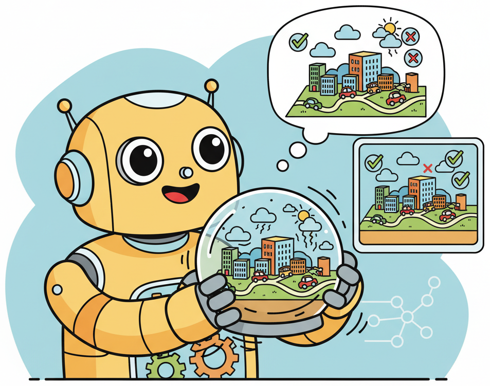
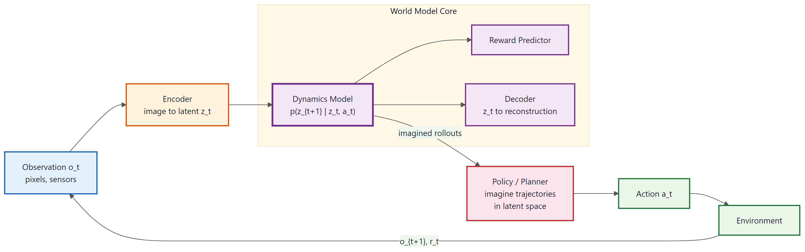

"A model that cannot predict the consequences of actions does not understand the world; it merely correlates tokens."
Frontier, World Modeling AI Agent
Language models predict the next token. World models predict the next state of reality. A new class of models is learning to simulate physical environments: generating photorealistic video, modeling driving scenarios, and building interactive 3D worlds from single images. These world models bridge the gap between language understanding and physical reasoning, enabling agents to plan by imagining future outcomes rather than relying solely on textual inference. This section surveys the architectures, applications, and open problems in this rapidly evolving frontier.
Prerequisites
This section assumes familiarity with softmax (Section 4.1), pretraining and scaling laws (Chapter 06), and the basics of Section 21.1 (Section 21.1). Some exposure to diffusion models and reinforcement learning concepts will be helpful, though core ideas are introduced inline.

33.4.1 What Are World Models?
Close your eyes and imagine pushing a glass off the edge of a table. You already know what happens: it falls, shatters, and you regret the decision. That mental simulation is a world model. In AI, a world model is an internal representation that allows a system to predict how the environment will change in response to actions. The concept has deep roots in cognitive science (Kenneth Craik's 1943 "small-scale model" hypothesis) and in control theory, where model-based controllers use a dynamics model to plan optimal trajectories. In the context of modern AI, world models refer to learned neural networks that can simulate future states of complex environments, including visual scenes, physical interactions, and multi-agent dynamics.

Ha and Schmidhuber (2018) formalized the modern deep learning approach in their "World Models" paper, which decomposed the problem into three components: a vision model (V) that compresses high-dimensional observations into a compact latent representation, a memory model (M, typically an RNN or SSM) that predicts future latent states, and a controller (C) that selects actions based on the current state and predicted futures. The agent could train its controller entirely within the "dream" generated by the memory model, a concept the authors called "learning inside the dream."
Mental Model: The Chess Player's Imagination. A grandmaster does not need to physically move pieces to evaluate a position. They simulate future board states mentally, exploring lines of play several moves ahead. World models give AI systems the same capability: instead of interacting with the real environment (which may be slow, expensive, or dangerous), the agent can "imagine" what would happen if it took a particular action. The fidelity of this imagination determines how useful the world model is for planning.
The connection to large language models is more than metaphorical. LLMs can be viewed as world models of text: they predict the next token given a context, implicitly encoding knowledge about how narratives unfold, how arguments develop, and how code executes. The frontier research question is whether this principle can be extended beyond text to encompass visual, physical, and interactive modalities. Recent evidence suggests the answer is yes, and the results are transforming multiple fields simultaneously.
World Model Formulation.
A world model learns a transition function over latent states. Given an observation $o_t$ at time $t$ and an action $a_t$, the model predicts the next latent state:
$$\begin{aligned}z_t &= \text{Encoder}(o_t) \quad \text{(compress observation to latent)} \\ \hat{z}_{t+1} &= f_\theta(z_t, a_t) \quad \text{(predict next state)} \\ \hat{o}_{t+1} &= \text{Decoder}(\hat{z}_{t+1}) \quad \text{(reconstruct observation)} \\ \hat{r}_{t+1} &= g_\theta(z_t, a_t) \quad \text{(predict reward)}\end{aligned}$$The model is trained to minimize the prediction error between $\hat{z}_{t+1}$ and $z_{t+1}$ (the actual next latent state), enabling the agent to "imagine" trajectories without environment interaction.
33.4.2 Video Generation as World Simulation
The most dramatic demonstration of world models at scale has come from video generation systems. These models take a text prompt, an image, or a short video clip and produce photorealistic video that unfolds according to physical laws (or at least an approximation of them). The key insight is that generating coherent video requires the model to learn something about physics, object permanence, lighting, and spatial relationships, even though it is never explicitly taught these concepts.
33.4.2.1 Sora (OpenAI)
OpenAI's Sora, announced in February 2024, demonstrated that a diffusion transformer (DiT) trained on large-scale video data could generate minute-long videos with remarkable coherence. Sora operates on "spacetime patches," treating video as a sequence of 3D tokens (spatial patches across multiple frames) and applying a transformer-based diffusion process to denoise them. The architecture draws on the same scaling principles that powered GPT-4: more data and more compute yield qualitatively better results.
Sora's technical contribution lies in its unified representation. Rather than generating video frame-by-frame or using separate spatial and temporal models, it processes entire video sequences as a single latent tensor. This allows the model to maintain temporal consistency, because the diffusion process jointly denoises all frames. Objects that appear in early frames persist in later frames; lighting changes propagate consistently; camera movements produce geometrically correct parallax effects.
33.4.2.2 Genie and Genie 2 (Google DeepMind)
Google DeepMind's Genie (Bruce et al., 2024) took a different approach: instead of generating passive video, it trained a model that produces interactive environments. Genie was trained on 200,000 hours of unlabeled internet video of 2D platformer games. Despite never being given action labels, it learned a latent action space, allowing users to control the generated character in real time. The model consists of three components: a video tokenizer (converting frames to discrete tokens), a latent action model (inferring actions between consecutive frames), and a dynamics model (predicting the next frame given the current frame and action).
Genie 2 (December 2024) scaled this concept dramatically, generating interactive 3D environments from a single image prompt. Where Genie operated on simple 2D games, Genie 2 produces photorealistic 3D worlds with consistent geometry, lighting, physics, and even NPC behavior. A single image of a landscape can be transformed into a navigable environment where the user can walk, look around, and interact with objects. The generated world persists and evolves, maintaining spatial consistency as the camera moves through it.
33.4.2.3 Cosmos (NVIDIA)
NVIDIA's Cosmos platform (2025) positions world models as foundational infrastructure for physical AI. Rather than building a single video generation model, NVIDIA released a family of world foundation models in multiple sizes (from 4B to 14B parameters), designed to be fine-tuned for specific physical AI applications. Cosmos includes both diffusion-based and autoregressive architectures, a dedicated video tokenizer, and a data processing pipeline optimized for physical AI training data.
The Cosmos approach reflects a maturing understanding of world models: they are not merely video generators but simulation engines that downstream applications can specialize. Robotics teams fine-tune Cosmos to predict the outcomes of manipulation actions. Autonomous driving teams use it to generate training scenarios. Game developers use it to prototype environments. The common foundation is a model that has internalized enough physical knowledge to serve as a general-purpose simulator.
Video generation is not just about making pretty videos. The significance of Sora, Genie 2, and Cosmos is not primarily aesthetic. These systems demonstrate that neural networks can learn implicit physics simulators from data alone. When a video model correctly simulates a ball bouncing, water flowing, or a car turning, it has encoded knowledge about gravity, fluid dynamics, and rigid-body mechanics in its weights, without any explicit physics equations. This is a form of emergent physical reasoning that may prove more flexible (if less precise) than hand-coded physics engines.
33.4.2.4 Evaluating Physical Plausibility
Evaluating whether generated video is "physically correct" is itself an open problem. Standard metrics like Frechet Video Distance (FVD) and Frechet Inception Distance (FID) measure statistical similarity to a reference distribution but do not directly assess physical plausibility. A video where a ball falls upward might score well on FVD if the visual quality is high and the motion is smooth.
Researchers have proposed several targeted evaluation approaches. PhysBench tests specific physical properties (gravity, collision, fluid behavior) by presenting scenarios with known outcomes and checking whether the model's prediction matches. Action-conditioned consistency evaluates whether the model's output changes appropriately when the input action changes (pushing an object left should move it left, not right). Long-horizon coherence measures whether physical properties remain consistent over extended sequences: does the shadow direction stay consistent? Do objects maintain their size as they move closer or farther from the camera?
33.4.3 Autonomous Driving World Models
Autonomous driving has become the primary proving ground for world models in safety-critical applications. The core motivation is data efficiency: real-world driving data is expensive to collect, and rare but dangerous scenarios (a child running into the road, a tire blowout on a highway) are by definition uncommon in naturalistic datasets. World models can generate unlimited synthetic variations of these scenarios, providing training data that would be impossible or unethical to collect in the real world.
33.4.3.1 GAIA-1 (Wayve)
GAIA-1 (Hu et al., 2023) was among the first large-scale world models specifically designed for autonomous driving. It is a 9-billion-parameter generative model trained on driving video, text descriptions, and vehicle telemetry (speed, steering angle, GPS coordinates). Given a context of a few seconds of driving video and a text instruction (e.g., "turn left at the next intersection"), GAIA-1 generates a plausible continuation of the driving scene.
The multimodal conditioning is particularly powerful. GAIA-1 can generate the same intersection approach under different conditions: "rainy night," "heavy traffic," "pedestrian crossing." This enables systematic testing of driving policies across conditions that would require months of real-world data collection to encounter naturally. The model also demonstrates disentangled control, meaning you can change the weather without changing the road geometry, or change the traffic density without changing the time of day.
33.4.3.2 DriveDreamer and UniSim
DriveDreamer (Wang et al., 2023) extended the driving world model concept by incorporating structured representations of the scene, including 3D bounding boxes, lane markings, and traffic signal states. Rather than generating video purely from pixels, DriveDreamer conditions on a structured scene graph, ensuring that generated scenarios respect road geometry and traffic rules. This structured conditioning produces more reliable training data than pure pixel-space generation.
UniSim (Yang et al., 2023) from Google DeepMind pursued a different strategy: building a universal simulator that generates sensor-realistic data (camera, LiDAR, radar) from high-level scene descriptions. UniSim combines neural rendering with world modeling, producing not just RGB video but full sensor suites that can be fed directly into autonomous driving perception pipelines. This closed-loop capability, where the world model generates sensor data, the driving policy produces actions, and the world model generates the next state conditioned on those actions, is the foundation of simulation-based training.
33.4.3.3 Sim-to-Real Transfer
The critical question for driving world models is whether policies trained in generated scenarios transfer to real-world driving. Early results are encouraging but mixed. Wayve reported that augmenting real-world training data with GAIA-1 generated data improved their driving policy's performance on rare scenarios by 15-25%, measured by reduction in safety-critical disengagements during road testing. However, the benefit diminishes for common scenarios where real data is already abundant.
World models for autonomous driving generate plausible scenarios, not guaranteed correct physics. A world model might generate a vehicle that clips through a guardrail or a pedestrian that changes direction instantaneously. Using world model outputs directly for safety certification requires additional verification layers. The models are best understood as data augmentation tools, not as ground-truth simulators.
| System | Developer | Parameters | Modalities | Key Innovation |
|---|---|---|---|---|
| GAIA-1 | Wayve | 9B | Video + text + telemetry | Multimodal conditional generation |
| DriveDreamer | Tsinghua / Li Auto | ~2B | Video + scene graphs | Structured scene conditioning |
| UniSim | Google DeepMind | ~3B | Camera + LiDAR + radar | Multi-sensor closed-loop simulation |
| Cosmos (driving) | NVIDIA | 4B-14B | Video + actions | Foundation model fine-tuned for driving |
Table 32.4.1: Comparison of major autonomous driving world models. Parameter counts are approximate and reflect the world model component only.
33.4.4 Interactive World Models
The most ambitious application of world models is generating fully interactive environments: not passive video but worlds that respond to user input in real time. This transforms world models from content generators into simulation engines, potentially replacing or augmenting traditional game engines, training simulators, and virtual environments.
33.4.4.1 Action-Conditioned Generation
Interactive world models extend the standard generation pipeline with an action input. At each timestep, the model receives the current frame (or latent state) plus an action (move forward, turn left, jump, interact) and generates the next frame. The critical challenge is maintaining consistency: as the user navigates a generated room, the model must remember that the bookshelf is to the left of the door, even after several camera turns that have taken it out of view.
Genie 2 demonstrated that this is achievable at impressive fidelity. From a single photograph of a room, the model generates a navigable 3D environment where spatial relationships persist across hundreds of interaction steps. The model maintains a latent representation of the full scene geometry and renders new viewpoints by decoding from this representation. This is functionally similar to a neural radiance field (NeRF) that can be extended and modified in real time.
33.4.4.2 Game Engine Replacement
A provocative implication of interactive world models is that they could replace traditional game engines for certain applications. Instead of manually modeling geometry, writing physics code, and scripting NPC behavior, a developer could provide a few reference images and let the world model handle simulation. Google DeepMind's GameNGen (2024) demonstrated this concept by training a diffusion model to simulate the classic game DOOM in real time, purely from neural network inference, with no access to the original game engine.
GameNGen achieves playable frame rates (20+ FPS) and reproduces game mechanics including enemy AI, weapon behavior, and level geometry with sufficient accuracy that players in blind tests could not reliably distinguish neural-rendered frames from engine-rendered frames. The model was trained on 900 million frames of gameplay data collected by a reinforcement learning agent playing DOOM, giving it comprehensive coverage of the game's state space.
Who: A creative director at an indie game studio working on a fantasy RPG with a small art team of three people.
Situation: The studio needed to prototype 20 distinct environments (villages, dungeons, forests) for a pitch to a publisher. Each environment traditionally required 2 to 3 weeks of 3D modeling, texturing, physics setup, and scripting.
Problem: At the current pace, producing 20 playable prototypes would take the team over a year, well past the publisher's review deadline of 8 weeks.
Decision: The creative director used an interactive world model (Genie 2) to generate navigable environments directly from concept paintings. The art team created 20 concept paintings in 2 weeks, then fed each painting to the world model to generate walkable prototypes where the team could navigate streets, enter buildings, and interact with objects.
Result: All 20 environment prototypes were generated in 3 days, compressing the concepting phase from months to under 3 weeks total (including the painting phase). The environments were not geometrically precise (hallucinated from the images), but they conveyed the spatial feel and art direction convincingly enough for the publisher pitch. The studio secured funding and used the prototypes as reference guides for the final 3D production.
Lesson: Interactive world models transform the game design concepting phase from weeks of manual 3D work to minutes of generation. The outputs are rapid prototypes, not production assets, but they compress the feedback loop between vision and playable experience by orders of magnitude.
33.4.5 Agent Planning with World Models
Perhaps the most significant long-term application of world models is enabling agents to plan by simulating the consequences of their actions before executing them. This is the core principle of model-based reinforcement learning (MBRL): rather than learning a policy purely from trial-and-error in the real environment (model-free RL), the agent first learns a model of the environment and then uses that model to plan.
33.4.5.1 The Dreamer Family
Hafner et al. developed the Dreamer line of agents (DreamerV1 through DreamerV3, 2019-2023), which learn world models from pixel observations and use them for planning. DreamerV3 is particularly notable for its generality: a single architecture with fixed hyperparameters achieves strong performance across 150+ tasks spanning continuous control, Atari games, Minecraft survival, and robotic manipulation, all without task-specific tuning.
DreamerV3's world model is a recurrent state-space model (RSSM) that maintains both a deterministic recurrent state and a stochastic component, capturing both predictable dynamics and environmental uncertainty. The agent plans by "imagining" trajectories: starting from the current state, it unrolls the world model for multiple steps using candidate action sequences, evaluates the predicted rewards, and selects the action sequence with the highest expected return. This planning happens entirely within the model, requiring no additional environment interaction.
Model-Based Planning with Learned World Models.
The agent selects actions by optimizing expected reward over imagined trajectories:
$$\begin{aligned}a^*_{t:t+H} &= \arg\max_{a_{t:t+H}} \sum_{h=0}^{H} \gamma^h \, \hat{r}_{t+h} \\ \text{where } \hat{z}_{t+h+1} &= f_\theta(\hat{z}_{t+h}, a_{t+h}) \text{ and } \hat{r}_{t+h} = g_\theta(\hat{z}_{t+h}, a_{t+h})\end{aligned}$$Here $H$ is the planning horizon, $\gamma$ is the discount factor, $f_\theta$ is the learned dynamics model, and $g_\theta$ is the learned reward predictor. The optimization is performed over imagined states, requiring zero real environment steps.
33.4.5.2 IRIS: Transformers as World Models
IRIS (Micheli et al., 2023) demonstrated that a standard autoregressive transformer can serve as an effective world model for Atari games. IRIS tokenizes game frames using a discrete autoencoder (VQ-VAE) and trains a GPT-style transformer to predict the next frame tokens given the history of frame tokens and actions. This reframes world modeling as a sequence prediction problem, directly analogous to language modeling.
The IRIS approach has an elegant simplicity: the same transformer architecture used for language (next-token prediction, causal attention, sampling strategies) works for world modeling by changing the vocabulary from text tokens to visual tokens and action tokens. IRIS achieved human-level performance on 10 of 26 Atari games using only 100K environment interactions (compared to millions for model-free methods), demonstrating the sample efficiency advantage of model-based approaches.
33.4.5.3 LLM-Scale World Models for Agent Planning
An emerging research direction combines the physical knowledge embedded in large video models with the reasoning capabilities of LLMs. The idea is to use a video world model as a "physics engine" and an LLM as a "reasoning engine," with the LLM proposing high-level plans and the world model simulating their physical consequences. If the LLM proposes "push the box to the wall," the world model simulates what happens, revealing whether the box actually reaches the wall or gets stuck on an obstacle.
This architecture addresses a fundamental limitation of LLM-based agents: they can reason about text descriptions of physical scenarios but have no grounded understanding of physics. By pairing them with world models that have learned physics from video data, the combined system can perform embodied reasoning, predicting the physical consequences of actions and adjusting plans accordingly.
- World models learn physics and causality from observation. They go beyond pattern matching to build predictive models of how environments evolve over time.
- Video generation is a proxy for world understanding. Models that can generate consistent, physically plausible video frames are implicitly learning spatial and temporal reasoning.
- Agent planning benefits from learned simulators. World models allow agents to evaluate plans in imagination before executing them in the real world.
A world model that is 99% accurate may still be catastrophically wrong in the 1% of cases that matter most. In safety-critical applications, world models should augment (not replace) traditional physics simulators and real-world testing. The convenience of unlimited synthetic data does not eliminate the need for rigorous validation against ground truth.
This lab requires a CUDA-capable GPU with at least 8 GB of VRAM. Training the full model takes approximately 2 hours on an A100; on consumer GPUs, expect 4-8 hours. You can reduce training time by lowering the number of diffusion steps or the model dimension.
The bouncing ball is a microcosm of world modeling. Even this simple scenario exercises the core challenges: the model must learn that the ball persists between frames (object permanence), that it moves in a consistent direction (momentum), that it reverses direction at boundaries (collision physics), and that the applied action influences its trajectory (action conditioning). Scaling these same principles to photorealistic video of complex environments is an engineering challenge, not a conceptual one.
World models as the missing link for embodied AI. Current LLM-based agents (covered in Chapter 21) operate primarily in digital environments: browsing the web, writing code, managing files. Extending these agents to physical environments (robots, autonomous vehicles, manufacturing) requires grounding their reasoning in physical reality.
World models provide this grounding by giving the agent an internal simulator it can query. The convergence of LLM reasoning and world model simulation is widely considered one of the most important research directions in AI as of 2026.
33.4.6 Limitations and Open Problems
Despite rapid progress, world models face fundamental challenges that limit their reliability and applicability. Understanding these limitations is essential for anyone considering world models in production systems.
33.4.6.1 Hallucinated Physics
World models learn statistical regularities from training data, not physical laws. When encountering scenarios outside their training distribution, they may generate physically impossible outcomes: objects passing through each other, shadows pointing in inconsistent directions, liquids behaving like solids, or gravity reversing mid-scene. These failures are analogous to the hallucinations observed in LLMs but potentially more dangerous in physical applications.
The problem is especially acute for rare physical phenomena. A model trained primarily on daytime driving footage may generate implausible nighttime lighting. A model trained on indoor scenes may not correctly simulate outdoor wind effects. Unlike physics engines that implement equations of motion, neural world models have no guarantee of physical consistency; they only learn whatever regularities are present in their training data.
33.4.6.2 Temporal Consistency and Drift
Over extended generation horizons, world models accumulate errors. Small inaccuracies in early frames compound as the model conditions on its own (slightly incorrect) outputs, producing increasingly divergent predictions. This "drift" manifests as objects gradually changing shape, textures morphing, and spatial relationships degrading. Sora can generate impressive 60-second clips but struggles with multi-minute coherence. Genie 2's interactive environments maintain consistency for hundreds of steps but eventually degrade.
Mitigating drift is an active research area. Approaches include periodic re-anchoring (conditioning on a real observation to reset the latent state), hierarchical generation (generating keyframes first, then interpolating), and explicit memory mechanisms that store and retrieve spatial information. None of these fully solves the problem, and long-horizon consistency remains the primary bottleneck for practical deployment.
33.4.6.3 Evaluation Metrics
The field lacks consensus on how to evaluate world models. Common metrics include:
- Frechet Video Distance (FVD): measures the statistical similarity between generated and real video distributions. Lower is better. Widely used but insensitive to physical plausibility.
- Frechet Inception Distance (FID): the image-level analogue of FVD, applied to individual frames. Does not capture temporal coherence.
- LPIPS (Learned Perceptual Image Patch Similarity): measures perceptual similarity between paired frames. Useful for action-conditioned evaluation but requires ground-truth pairs.
- Physics-specific benchmarks: PhysBench, PhysGen, and similar task-specific tests that probe particular physical properties. More targeted but narrow in scope.
None of these metrics fully captures the quality that matters most for downstream applications: does the world model generate scenarios that improve the performance of agents trained on them? This "utility-based" evaluation is task-specific and expensive to compute, making it impractical for routine model comparison.
33.4.6.4 Computational Cost
Generating high-fidelity video is computationally expensive. Sora requires hundreds of GPU-hours to generate a single minute of video at full resolution. Interactive world models like Genie 2 require multiple high-end GPUs for real-time inference. This cost limits practical deployment to well-funded research labs and large companies, and makes iterative development cycles slow and expensive.
The computational challenge is structural: video generation involves predicting millions of pixels per second, each conditioned on a high-dimensional context. Techniques from inference optimization (covered in Chapter 09), including quantization, distillation, and caching, are being adapted for video models but have not yet achieved the dramatic speedups seen in text generation.
33.4.6.5 When World Models Fail
World models are most useful when the environment has learnable regularities and when the cost of real interaction is high. They are least useful (and most dangerous) when:
- The environment is highly stochastic: if outcomes are fundamentally unpredictable (e.g., financial markets), a world model's predictions will be overconfident.
- The training data does not cover the deployment distribution: a driving world model trained in California may generate plausible but incorrect scenarios for icy roads in Norway.
- Precision matters more than plausibility: for robotics surgery or structural engineering, "approximately correct physics" is not sufficient.
- The world model's errors are correlated with the agent's failures: if the model systematically underestimates a particular risk, the agent will be systematically unprepared for it.
Lab: Video Prediction with a Diffusion Transformer
This lab builds a minimal world model that predicts the next video frame given previous frames and an action. We use a simplified diffusion transformer architecture operating on small (64x64) frames to keep compute requirements manageable. The goal is to illustrate the core concepts, not to produce production-quality video.
# world_model_lab.py
# Minimal video prediction world model using a diffusion transformer
# Requires: torch >= 2.1, torchvision, einops
import torch
import torch.nn as nn
import torch.nn.functional as F
from einops import rearrange, repeat
import math
class SinusoidalPosEmb(nn.Module):
"""Sinusoidal positional embedding for diffusion timesteps."""
def __init__(self, dim):
super().__init__()
self.dim = dim
def forward(self, t):
device = t.device
half_dim = self.dim // 2
emb = math.log(10000) / (half_dim - 1)
emb = torch.exp(torch.arange(half_dim, device=device) * -emb)
emb = t[:, None].float() * emb[None, :]
return torch.cat([emb.sin(), emb.cos()], dim=-1)
class PatchEmbed(nn.Module):
"""Convert image frames into patch tokens."""
def __init__(self, img_size=64, patch_size=8, in_channels=3, embed_dim=256):
super().__init__()
self.num_patches = (img_size // patch_size) ** 2
self.proj = nn.Conv2d(
in_channels, embed_dim,
kernel_size=patch_size, stride=patch_size
)
def forward(self, x):
# x: (B, C, H, W) -> (B, num_patches, embed_dim)
x = self.proj(x)
return rearrange(x, "b c h w -> b (h w) c")
class WorldModelBlock(nn.Module):
"""Transformer block with cross-attention for action conditioning."""
def __init__(self, dim=256, heads=8, mlp_ratio=4):
super().__init__()
self.norm1 = nn.LayerNorm(dim)
self.self_attn = nn.MultiheadAttention(dim, heads, batch_first=True)
self.norm2 = nn.LayerNorm(dim)
self.cross_attn = nn.MultiheadAttention(dim, heads, batch_first=True)
self.norm3 = nn.LayerNorm(dim)
self.mlp = nn.Sequential(
nn.Linear(dim, dim * mlp_ratio),
nn.GELU(),
nn.Linear(dim * mlp_ratio, dim),
)
def forward(self, x, context):
# Self-attention
h = self.norm1(x)
x = x + self.self_attn(h, h, h)[0]
# Cross-attention to action/context
h = self.norm2(x)
x = x + self.cross_attn(h, context, context)[0]
# Feed-forward
x = x + self.mlp(self.norm3(x))
return x
class SimpleWorldModel(nn.Module):
"""
A minimal diffusion-transformer world model.
Given N context frames and an action, predicts the next frame.
"""
def __init__(
self,
img_size=64,
patch_size=8,
context_frames=3,
action_dim=4,
embed_dim=256,
depth=6,
heads=8,
diffusion_steps=100,
):
super().__init__()
self.diffusion_steps = diffusion_steps
self.context_frames = context_frames
# Patch embedding for target (noisy) frame
self.target_embed = PatchEmbed(img_size, patch_size, 3, embed_dim)
# Patch embedding for context frames
self.context_embed = PatchEmbed(img_size, patch_size, 3, embed_dim)
num_patches = self.target_embed.num_patches
# Positional embeddings
self.pos_embed = nn.Parameter(torch.randn(1, num_patches, embed_dim) * 0.02)
self.ctx_pos_embed = nn.Parameter(
torch.randn(1, num_patches * context_frames, embed_dim) * 0.02
)
# Timestep and action embeddings
self.time_embed = nn.Sequential(
SinusoidalPosEmb(embed_dim),
nn.Linear(embed_dim, embed_dim),
nn.GELU(),
nn.Linear(embed_dim, embed_dim),
)
self.action_embed = nn.Sequential(
nn.Linear(action_dim, embed_dim),
nn.GELU(),
nn.Linear(embed_dim, embed_dim),
)
# Transformer blocks
self.blocks = nn.ModuleList([
WorldModelBlock(embed_dim, heads) for _ in range(depth)
])
self.norm_out = nn.LayerNorm(embed_dim)
# Predict noise (for diffusion)
self.to_pixels = nn.Linear(embed_dim, patch_size * patch_size * 3)
self.patch_size = patch_size
self.img_size = img_size
# Noise schedule (linear beta schedule)
betas = torch.linspace(1e-4, 0.02, diffusion_steps)
alphas = 1.0 - betas
alphas_cumprod = torch.cumprod(alphas, dim=0)
self.register_buffer("alphas_cumprod", alphas_cumprod)
self.register_buffer("sqrt_alphas_cumprod", torch.sqrt(alphas_cumprod))
self.register_buffer(
"sqrt_one_minus_alphas_cumprod", torch.sqrt(1.0 - alphas_cumprod)
)
def forward_denoise(self, noisy_target, context_frames, action, timestep):
"""Predict noise given noisy target frame, context, and action."""
B = noisy_target.shape[0]
# Embed noisy target frame
x = self.target_embed(noisy_target) + self.pos_embed
# Embed context frames and concatenate
ctx_tokens = []
for i in range(self.context_frames):
frame = context_frames[:, i] # (B, C, H, W)
tokens = self.context_embed(frame)
ctx_tokens.append(tokens)
ctx = torch.cat(ctx_tokens, dim=1) + self.ctx_pos_embed
# Add timestep and action as extra context tokens
t_emb = self.time_embed(timestep).unsqueeze(1) # (B, 1, D)
a_emb = self.action_embed(action).unsqueeze(1) # (B, 1, D)
ctx = torch.cat([ctx, t_emb, a_emb], dim=1)
# Process through transformer blocks
for block in self.blocks:
x = block(x, ctx)
x = self.norm_out(x)
noise_pred = self.to_pixels(x) # (B, num_patches, patch_size^2 * 3)
# Reshape to image
p = self.patch_size
h = w = self.img_size // p
noise_pred = rearrange(
noise_pred, "b (h w) (p1 p2 c) -> b c (h p1) (w p2)",
h=h, w=w, p1=p, p2=p, c=3
)
return noise_pred
def compute_loss(self, context_frames, target_frame, action):
"""Training loss: predict the noise added to target frame."""
B = target_frame.shape[0]
device = target_frame.device
# Sample random timesteps
t = torch.randint(0, self.diffusion_steps, (B,), device=device)
# Add noise to target frame
noise = torch.randn_like(target_frame)
sqrt_alpha = self.sqrt_alphas_cumprod[t][:, None, None, None]
sqrt_one_minus = self.sqrt_one_minus_alphas_cumprod[t][:, None, None, None]
noisy_target = sqrt_alpha * target_frame + sqrt_one_minus * noise
# Predict noise
noise_pred = self.forward_denoise(noisy_target, context_frames, action, t)
return F.mse_loss(noise_pred, noise)
# Training loop (simplified)
import torch
from torch.utils.data import DataLoader, Dataset
import numpy as np
class SyntheticPhysicsDataset(Dataset):
"""
Generate simple 2D physics scenarios: a ball bouncing in a box.
Each sample is (context_frames, target_frame, action).
Actions: [dx, dy, 0, 0] representing applied force direction.
"""
def __init__(self, num_samples=10000, img_size=64, context_frames=3):
self.num_samples = num_samples
self.img_size = img_size
self.context_frames = context_frames
def __len__(self):
return self.num_samples
def _render_frame(self, x, y, radius=4):
"""Render a white ball on black background."""
frame = np.zeros((3, self.img_size, self.img_size), dtype=np.float32)
yy, xx = np.ogrid[: self.img_size, : self.img_size]
mask = (xx - x) ** 2 + (yy - y) ** 2 <= radius ** 2
frame[:, mask] = 1.0
return frame
def __getitem__(self, idx):
rng = np.random.RandomState(idx)
# Random initial position and velocity
x = rng.uniform(10, self.img_size - 10)
y = rng.uniform(10, self.img_size - 10)
vx = rng.uniform(-3, 3)
vy = rng.uniform(-3, 3)
action = np.array([vx / 3, vy / 3, 0, 0], dtype=np.float32)
frames = []
for _ in range(self.context_frames + 1):
frames.append(self._render_frame(x, y))
x += vx
y += vy
# Bounce off walls
if x < 5 or x > self.img_size - 5:
vx *= -1
if y < 5 or y > self.img_size - 5:
vy *= -1
x = np.clip(x, 5, self.img_size - 5)
y = np.clip(y, 5, self.img_size - 5)
context = np.stack(frames[:self.context_frames]) # (N, C, H, W)
target = frames[self.context_frames] # (C, H, W)
return (
torch.from_numpy(context),
torch.from_numpy(target),
torch.from_numpy(action),
)
def train_world_model(epochs=50, batch_size=32, lr=1e-4):
device = torch.device("cuda" if torch.cuda.is_available() else "cpu")
model = SimpleWorldModel(
img_size=64, patch_size=8, context_frames=3,
action_dim=4, embed_dim=256, depth=6, heads=8,
diffusion_steps=100,
).to(device)
dataset = SyntheticPhysicsDataset(num_samples=10000)
loader = DataLoader(dataset, batch_size=batch_size, shuffle=True, num_workers=2)
optimizer = torch.optim.AdamW(model.parameters(), lr=lr, weight_decay=0.01)
print(f"Model parameters: {sum(p.numel() for p in model.parameters()):,}")
print(f"Training on {device}")
for epoch in range(epochs):
total_loss = 0
for ctx, target, action in loader:
ctx = ctx.to(device)
target = target.to(device)
action = action.to(device)
loss = model.compute_loss(ctx, target, action)
optimizer.zero_grad()
loss.backward()
optimizer.step()
total_loss += loss.item()
avg_loss = total_loss / len(loader)
if (epoch + 1) % 10 == 0:
print(f"Epoch {epoch+1}/{epochs}, Loss: {avg_loss:.4f}")
return model
if __name__ == "__main__":
model = train_world_model()
torch.save(model.state_dict(), "world_model_bouncing_ball.pt")
print("Training complete. Model saved.")
Explain the three components of Ha and Schmidhuber's World Models framework (vision model, memory model, controller). For each component, describe: (a) its role in the overall system, (b) the architectural choice made in the original paper, (c) how modern world models (such as Sora or DreamerV3) have evolved that component, and (d) what failure mode results when that component is inadequate.
You are tasked with evaluating two video world models for an autonomous driving application. Model A achieves FVD of 120 and can generate 10-second clips at 30 FPS. Model B achieves FVD of 180 but includes action conditioning that allows closed-loop simulation. Analyze: (a) why FVD alone is insufficient for this comparison, (b) what additional metrics you would use, (c) how you would test whether each model's generated scenarios actually improve driving policy performance, and (d) what physical plausibility tests are most important for driving applications.
Extend the SyntheticPhysicsDataset to include two balls that can collide with each other (elastic collision). Modify the world model training to handle this more complex scenario. Evaluate whether the model correctly learns: (a) independent motion of non-colliding balls, (b) momentum transfer during collisions, and (c) simultaneous wall and ball-ball collisions. Compare the training loss curve for one-ball vs. two-ball scenarios and discuss what the difference reveals about the model's capacity requirements.
Compare neural world models to traditional physics engines (e.g., MuJoCo, Bullet, Unreal Engine's PhysX) along the following axes: (a) accuracy and reliability of physical simulation, (b) generalization to novel scenarios, (c) computational cost at inference time, (d) data requirements, and (e) ability to handle soft bodies, fluids, and deformable objects. Under what circumstances would you choose a neural world model over a physics engine, and vice versa? Is there a hybrid approach that captures the strengths of both?
Explain the "drift" problem in autoregressive world models: why do prediction errors compound over time? Describe three approaches to mitigating drift (re-anchoring, hierarchical generation, explicit memory) and analyze the tradeoffs of each. Calculate: if a model introduces an average positional error of 0.5 pixels per frame for a moving object, how far off will the predicted position be after 100 frames? After 1,000 frames? What does this imply about the maximum useful planning horizon?
What Comes Next
This section explored how world models extend the prediction paradigm from text to physical reality. In the next section, Section 33.5: A Theory of Reasoning in LLMs, we examine formal frameworks for understanding when and why LLMs can reason, the role of chain-of-thought as a computational primitive, and the limits of compositional reasoning.
Ha, D. and Schmidhuber, J. (2018). "World Models." arXiv:1803.10122. NeurIPS 2018 oral presentation.
The seminal paper that introduced the modern concept of learned world models for agent planning, combining a variational autoencoder with an RNN controller. This work set the conceptual foundation for all systems discussed in this section.
Demonstrates a single world model agent that masters diverse tasks from video pixels alone, including Minecraft diamond collection. Shows the maturation of world model approaches for general-purpose reinforcement learning.
OpenAI Sora Team (2024). "Video Generation Models as World Simulators." OpenAI Technical Report.
Articulates the vision that video generation models can serve as general-purpose simulators of the physical world. This report reframed video generation as a path toward world understanding rather than a purely creative tool.
Yang, Z. et al. (2023). "UniSim: Learning Interactive Real-World Simulators." arXiv:2310.06114.
Presents a unified simulator that can generate realistic interactive experiences from diverse inputs including text, images, and actions. Bridges the gap between passive video generation and interactive world modeling.
Bruce, J. et al. (2024). "Genie: Generative Interactive Environments." ICML 2024.
Learns to generate entire playable 2D environments from a single image, without requiring action labels during training. Demonstrates that world models can emerge from observation alone.
Google DeepMind (2024). "Genie 2: A Large-Scale Foundation World Model." DeepMind Technical Report.
Scales the Genie approach to 3D environments, generating consistent, explorable worlds from single images. Represents the current frontier of interactive world generation.
Demonstrates a neural network running the game DOOM at interactive frame rates purely through diffusion, with no game engine. A striking proof that learned world models can replace hand-coded simulation.
Micheli, V. et al. (2023). "Transformers are Sample-Efficient World Models." ICLR 2023. (IRIS)
Shows that transformer-based world models can achieve strong Atari performance from limited experience. Connects the transformer architecture to the world model paradigm.
Hu, A. et al. (2023). "GAIA-1: A Generative World Model for Autonomous Driving." arXiv:2309.17080.
Applies the world model paradigm to autonomous driving, generating realistic driving scenarios for training and testing. Shows how world models address the data scarcity problem in safety-critical domains.
Generates driving videos conditioned on structured traffic constraints, enabling more controllable scenario generation than unconditioned approaches.
An open platform providing pre-trained world foundation models and tokenizers for physical AI development. The most comprehensive industry toolkit for building domain-specific world models.